Branch moreopenwhispr-ui-refresh, commit 266f0703. 15 findings. Open a folder for the write-up and the proof image. Nothing here is a fix.
Important
Assistant with tools never receives the screenshot
important/01-assistant-drops-screenshot-when-tools-are-on
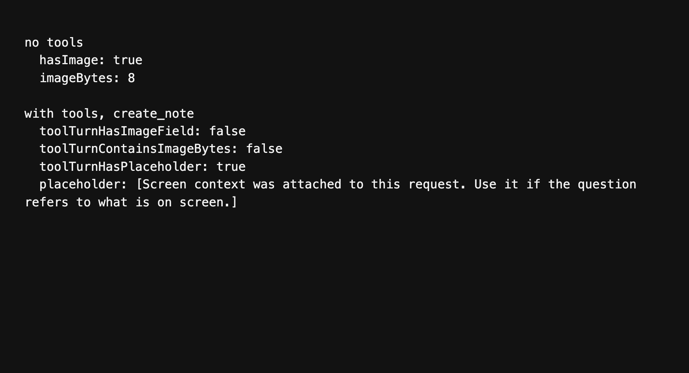
Importance: Important
Share screen context is on, and the voice assistant still answers as if it cannot see the display, whenever the turn is allowed to use tools. Notes, calendar, and the rest of the assistant tools take that path. The screenshot is kept only for a turn that has no tools at all.
runAntigravityChatStream in src/services/ai/antigravityChat.ts forwards screenContext to processAntigravityReasoning when tools is empty. When tools has entries, the image is not included in processAntigravityToolTurn. The user message gains this line instead:
[Screen context was attached to this request. Use it if the question refers to what is on screen.]
The bytes of the JPEG are not in that request.
What the run showed
A turn with no tools sent the image. hasImage was true and imageBytes was 8.
A turn with a create_note tool sent no screenContext field. The payload did not contain the image bytes QUJDRA. It did contain the placeholder sentence above.
Stopping the assistant still runs the tool
important/02-cancel-still-runs-assistant-tools
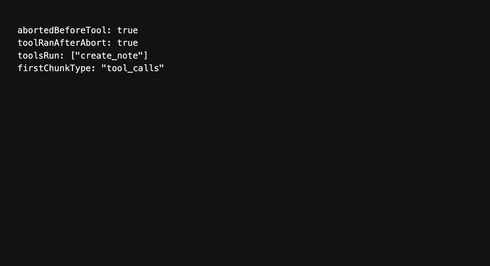
Importance: Important
Esc or Stop aborts the Antigravity chat signal, but the turn that is already in flight still comes back and still runs its tool. A cancelled request can create or change a note after the user has stopped it.
cancelActiveStream in src/services/ReasoningService.ts calls abort() on the controller. runAntigravityChatStream in src/services/ai/antigravityChat.ts checks that signal only at the top of the loop, before processAntigravityToolTurn. The IPC payload has no abort signal. When the response arrives, the function does not look at the signal again. A tool_call result goes straight to executeToolCall.
What the run showed
The signal was aborted while the tool turn was still waiting. After the response was released, executeToolCall ran create_note. toolRanAfterAbort was true, and the first chunk type was tool_calls.
Live transcription rejects the recording itself
important/03-live-transcription-refuses-the-recording
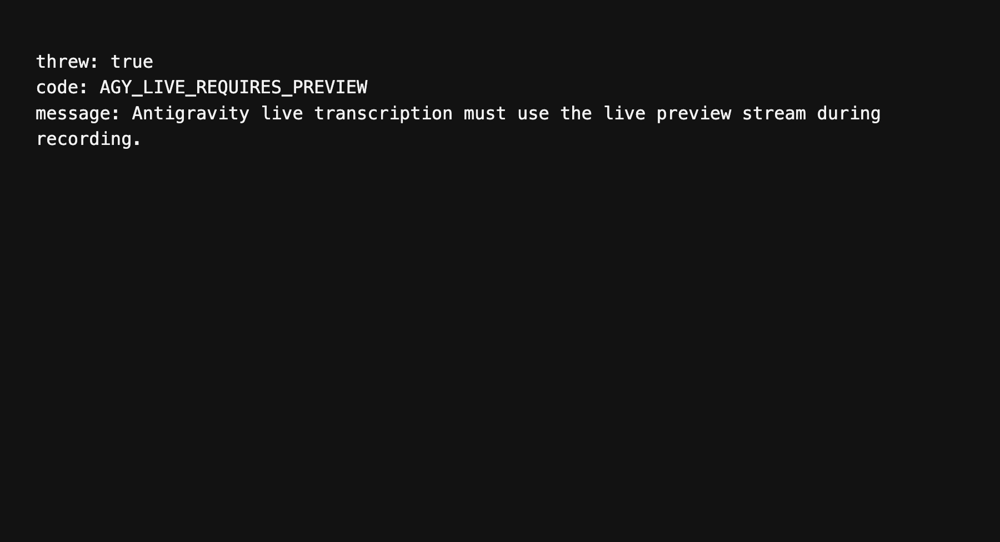
Importance: Important
Gemini 3.5 Transcribe Live is a selectable Antigravity model. If the live preview stream does not hand back a committed transcript, the recording is not transcribed. The batch path throws and stops.
transcribeWithAntigravity in src/helpers/antigravityTranscription.js hits this before it converts audio or calls the gateway, when the model is gemini-3.5-transcribe-live:
Antigravity live transcription must use the live preview stream during recording.
The error code is AGY_LIVE_REQUIRES_PREVIEW. That throw sits outside the gateway fallback, so the older agy write-file path does not run either. processWithOpenAIAPI in src/helpers/audioManager.js only skips the batch call when the preview stop already returned non-empty streamed text with streamed: true. An empty or truncated live flush falls through to this throw.
What the run showed
transcribeWithAntigravity was called with model gemini-3.5-transcribe-live and a wav buffer. It threw AGY_LIVE_REQUIRES_PREVIEW and the message above. The access-token function was never called.
Paste focuses the app and switches Spaces
important/04-paste-focuses-the-app-and-switches-spaces
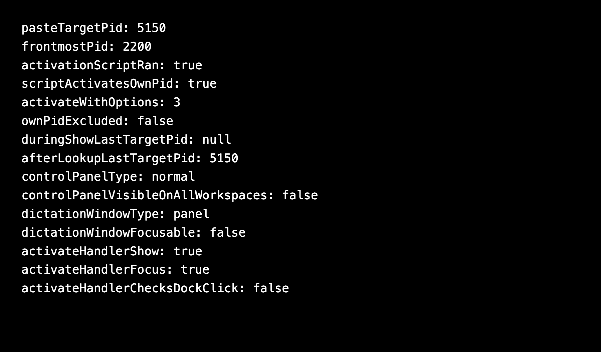
Importance: Important
Dictation paste on macOS activates a process and brings every window of that process forward. When the stored process is this app, that set includes the control panel. The control panel is a normal window, and it does not appear on every Space. macOS switches to the virtual desktop where that window sits. The paste keystroke is then delivered to the app that activation just brought forward.
paste-text in src/helpers/ipcHandlers.js calls textEditMonitor.activateTargetPid() before it pastes. activatePid in src/helpers/textEditMonitor.js calls _activateApp. The script there runs activateWithOptions(3). That value is all windows combined with ignoring other apps. The function does not skip this app's own pid.
The pid is whatever captureTargetPid stored. That method clears lastTargetPid and starts an osascript lookup. Hotkey handling calls showDictationPanel without waiting for the lookup. _sendDictationToggle in src/helpers/windowManager.js does this, and the macOS hotkey handlers in main.js do the same. The value written later is the app that is frontmost when the lookup finishes. Paste then activates that pid.
The dictation pill is a panel, not focusable, and visible on all workspaces. The control panel is not. CONTROL_PANEL_CONFIG sets type to normal and visibleOnAllWorkspaces to false.
app.on("activate") in main.js is a second path to the same window. When any window already exists, the handler calls controlPanelWindow.show() and controlPanelWindow.focus(). It does not check that the Dock was clicked. Showing and focusing that normal window moves the user to its Space.
What the run showed
The paste target was pid 5150. Another app, pid 2200, was frontmost. activateTargetPid still ran the activation script once. The script matched processIdentifier === 5150 and called activateWithOptions(3). The activate function does not mention process.pid or getOwnProcessPids.
A capture was started, and the show-panel step ran while lastTargetPid was null. The lookup then stored 5150.
The loaded window config reported the control panel as type normal with visibleOnAllWorkspaces false, and the dictation window as type panel, focusable false, visibleOnAllWorkspaces true.
The activate handler source contains both controlPanelWindow.show() and controlPanelWindow.focus(), and it does not read an event or a reason.
Medium importance
A missing model is reported as a rate limit
medium/01-missing-model-reported-as-rate-limit
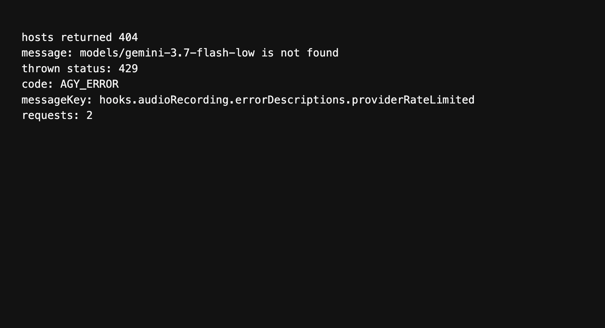
Importance: Medium importance
When both Cloud Code hosts answer 404 for a model, generateContent in src/helpers/antigravityGateway.js still throws with HTTP status 429. The UI then uses the rate-limit string, hooks.audioRecording.errorDescriptions.providerRateLimited, even though the body says the model was not found.
After a 404 or a 429, the inner retry loop breaks and the next host is tried. When the hosts are exhausted, the function calls throwGatewayFailure(429, lastBody) regardless of the status that was actually returned.
What the run showed
Both hosts were asked for gemini-3.7-flash-low and both returned 404 with models/gemini-3.7-flash-low is not found. The thrown error had status 429, code AGY_ERROR, and messageKey hooks.audioRecording.errorDescriptions.providerRateLimited. The message text was still the not-found string.
The transcription model in the picker is not the model that is sent
medium/02-selected-transcription-model-is-not-sent
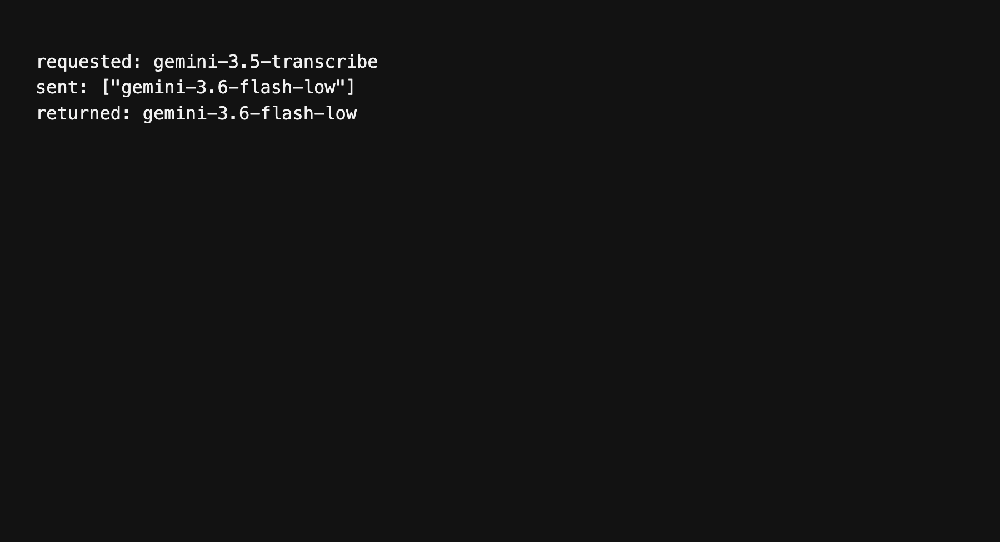
Importance: Medium importance
The Antigravity speech model in the registry is gemini-3.5-transcribe, named Gemini 3.5 Transcribe. transcribeAudioViaGateway in src/helpers/antigravityGateway.js accepts that model argument and does not send it. The request loop always uses GATEWAY_STT_MODELS, which starts at gemini-3.6-flash-low, then gemini-3-flash, then gemini-2.5-flash.
What the run showed
The call requested gemini-3.5-transcribe. The gateway body contained gemini-3.6-flash-low. The returned model was gemini-3.6-flash-low.
Retired Gemini 3.5 Flash rows are still choices
medium/03-retired-flash-models-still-in-the-picker
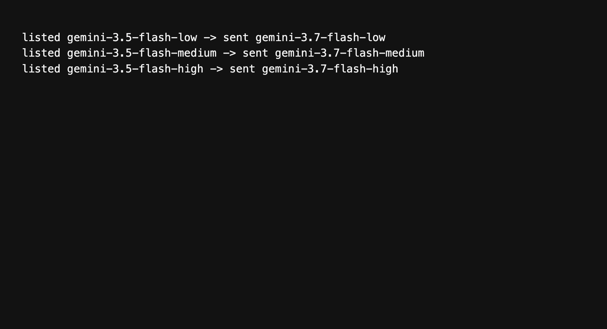
Importance: Medium importance
Settings still lists three Antigravity cleanup models that the CLI mapping immediately replaces:
- `gemini-3.5-flash-low` is sent as `gemini-3.7-flash-low`
- `gemini-3.5-flash-medium` is sent as `gemini-3.7-flash-medium`
- `gemini-3.5-flash-high` is sent as `gemini-3.7-flash-high`
The rows live in src/models/modelRegistryData.json under the antigravity cloud provider. resolveAgyCliModel in src/helpers/antigravityModels.ts performs the replacement. The 3.7 rows are listed as well, so the 3.5 rows are a second set of labels for the same three models.
What the run showed
Each listed 3.5 id was passed through resolveAgyCliModel. Each one came back as the matching 3.7 id.
Antigravity audio conversion has no deadline
medium/04-antigravity-audio-convert-can-hang
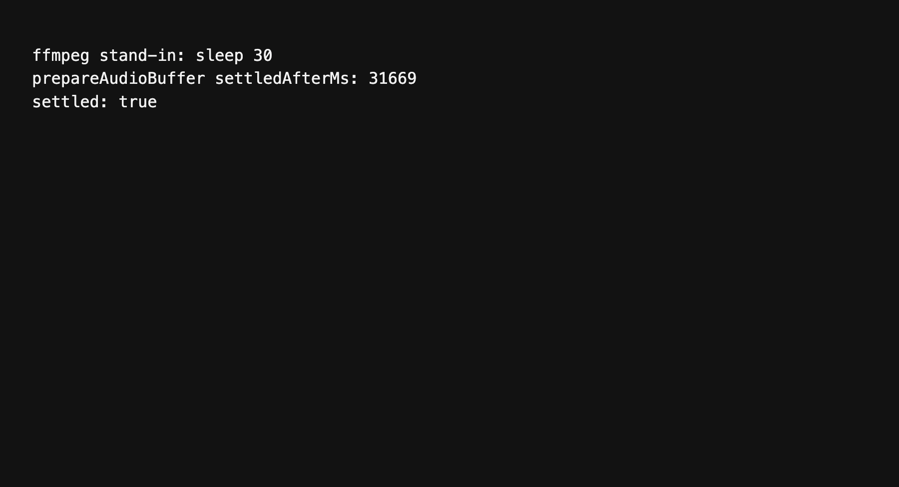
Importance: Medium importance
Dictation that needs a wav conversion calls convertToWav in src/helpers/antigravityTranscription.js. That function uses spawnSync and does not pass a timeout. The dictation request stays on that call until ffmpeg exits. A stuck ffmpeg holds the transcription for as long as the process lives.
prepareAudioBuffer is the exported caller. It runs the conversion whenever ffmpegPath is set and the input is not already wav.
What the run showed
prepareAudioBuffer was pointed at a stand-in binary that only runs sleep 30. The call did not return until that sleep finished. settledAfterMs was 31669.
A narrow window says Dictation while Settings is open
medium/05-narrow-settings-labeled-as-dictation

Importance: Medium importance
Below 800px the sidebar is replaced by the compact nav in ControlPanel.tsx. Settings is a real view, but it is not one of CONTROL_PANEL_NAV_ITEMS in src/components/control-panel/controlPanelNavModel.ts. ControlPanelCompactNav looks up the active view in that list and, on a miss, uses the first item. The first item is Dictation.
The page underneath is Settings. The menu trigger still reads Dictation.
What the screenshot shows
The window content size was 720 by 800. Settings was opened from the gear button. The trigger label was Dictation. The body of the page was the Settings view, on Preferences.
A refresh writes the Antigravity token file back after it is gone
medium/06-sign-out-undone-by-token-refresh
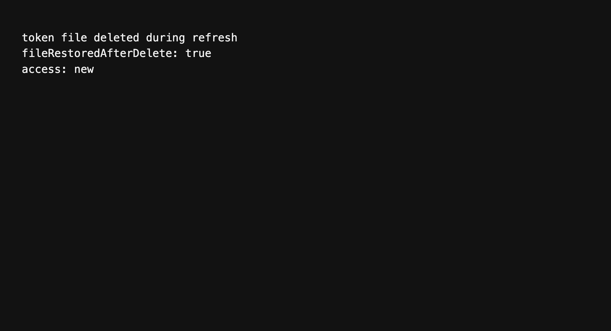
Importance: Medium importance
getAntigravityAccessToken in src/helpers/antigravityAuth.js reads ~/.gemini/antigravity-cli/antigravity-oauth-token, refreshes it, then writes that same object back with writeTokenFile. It does not read the file again after the network call. If the file is removed while the refresh is in flight, the write creates it again and the session is back.
What the run showed
The token file was deleted inside the refresh request, before the new access token was returned. After getAntigravityAccessToken resolved, the file existed again and its access token was new.
The fork line says the app is a fork of itself
medium/07-fork-line-names-the-fork
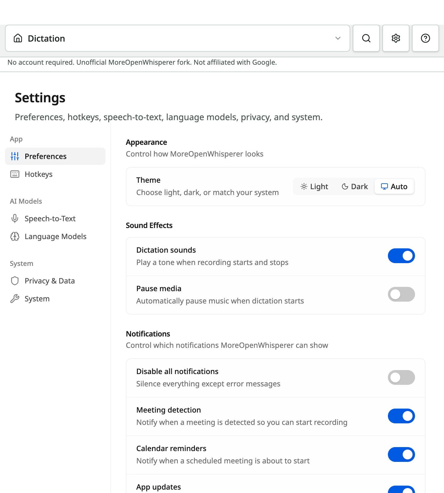
Importance: Medium importance
The control panel footer is supposed to name the upstream project. The English string is Unofficial {{upstreamName}} fork. and upstreamName is OpenWhispr.
src/i18n.ts runs rewriteUpstreamBrand on every translated string when this is a MoreOpenWhisperer build. That function replaces every OpenWhispr with MoreOpenWhisperer. The interpolated upstream name is replaced too. The line that shows up is Unofficial MoreOpenWhisperer fork.
The same three lines sit in the sidebar and in the compact nav. ControlPanelSidebar.tsx renders controlPanel.shell.forkDisclosureUnofficial.
What the screenshot shows
Under the compact nav, the disclosure reads: No account required. Unofficial MoreOpenWhisperer fork. Not affiliated with Google.
The first-run title wraps to three lines and the dev hint is cut off
medium/08-first-run-title-and-clipped-hint
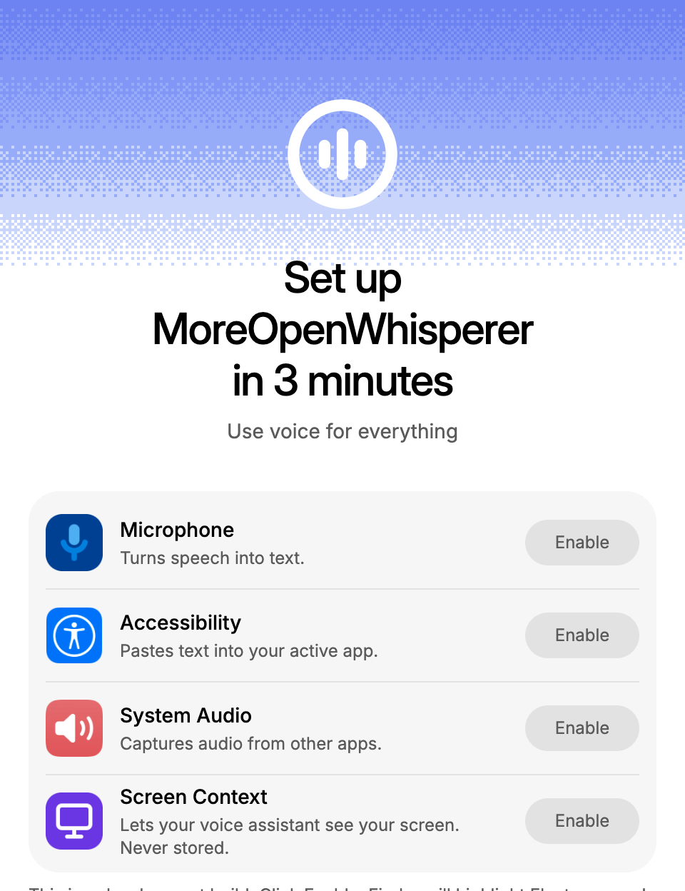
Importance: Medium importance
The permissions step is the first screen of a MoreOpenWhisperer install. The English source string is Set up OpenWhispr in 3 minutes. The brand rewriter turns that into Set up MoreOpenWhisperer in 3 minutes. The heading is capped at max-w-72 in CompactPermissionsStep.tsx, and the comment above it still describes a two-line break, Set up OpenWhispr and in 3 minutes.
On a 480 by 624 content window, the heading is three lines. The h1 box runs from y 176 to y 284, which is 108px, three times the 36px line height.
The development-only hint, onboarding.permissions.electronDevHint, starts at y 619 and ends at y 667. The window is 624px tall, so 43px of that paragraph is past the bottom edge. onboarding-shell-scroll hides the scrollbar. The hint is shown only when import.meta.env.DEV is set, so a packaged build does not render that paragraph. The three-line title is what a packaged build still shows.
What the screenshot shows
clipped.png is that 480 by 624 window. The title is three lines. The grey development hint is sliced along the bottom edge.
Gemini 3.7 is still the default
medium/09-gemini-3-7-is-still-the-default
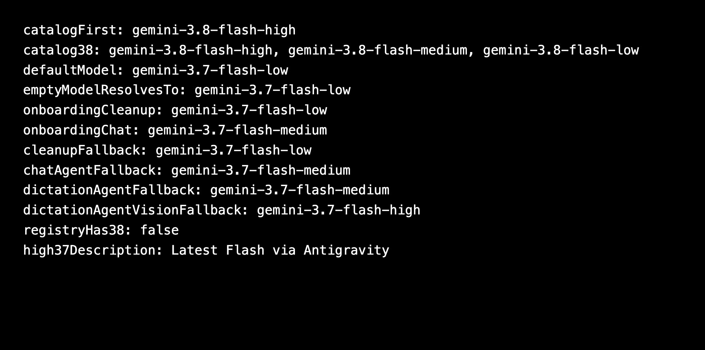
Importance: Medium importance
The current Antigravity catalog lists Gemini 3.8 Flash first. A fresh setup still starts on Gemini 3.7, and the picker has no 3.8 row.
DEFAULT_ANTIGRAVITY_MODEL in src/helpers/antigravityModels.ts and src/helpers/antigravityModels.cjs is gemini-3.7-flash-low. resolveAgyCliModel returns that id when the model string is empty. Onboarding in src/components/onboarding/antigravitySetup.ts writes gemini-3.7-flash-low for cleanup and gemini-3.7-flash-medium for chat. With no saved choice, src/stores/settingsStore.ts falls back to gemini-3.7-flash-medium for the chat agent and the dictation agent, and to gemini-3.7-flash-high for the vision model.
The Antigravity models in src/models/modelRegistryData.json stop at 3.7. There is no gemini-3.8 id. The 3.7 high row is described as Latest Flash via Antigravity.
What the run showed
agy models printed gemini-3.8-flash-high as the first row, then gemini-3.8-flash-medium and gemini-3.8-flash-low. DEFAULT_ANTIGRAVITY_MODEL was gemini-3.7-flash-low. An empty model resolved to gemini-3.7-flash-low. registryHas38 was false. The 3.7 high description was Latest Flash via Antigravity.
Low importance
Antigravity model blurbs stay in English
low/01-antigravity-descriptions-left-in-english
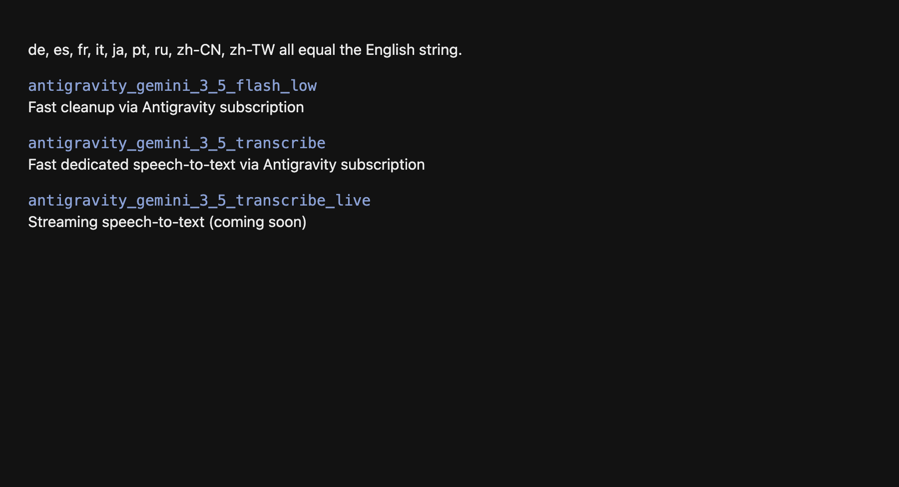
Importance: Low importance
The Antigravity rows in Settings use description keys under models.descriptions. In German, Spanish, French, Italian, Japanese, Portuguese, Russian, Simplified Chinese, and Traditional Chinese, these values are the same English sentences as in src/locales/en/translation.json:
- `models.descriptions.transcription.antigravity_gemini_3_5_transcribe`
- `models.descriptions.transcription.antigravity_gemini_3_5_transcribe_live`
- `models.descriptions.cloud.antigravity_gemini_3_5_flash_low`
- `models.descriptions.cloud.antigravity_gemini_3_5_flash_medium`
- `models.descriptions.cloud.antigravity_gemini_3_5_flash_high`
- `models.descriptions.cloud.antigravity_gemini_3_7_flash_low`
- `models.descriptions.cloud.antigravity_gemini_3_7_flash_medium`
- `models.descriptions.cloud.antigravity_gemini_3_7_flash_high`
- `models.descriptions.cloud.antigravity_gemini_3_1_pro_high`
- `models.descriptions.cloud.antigravity_claude_sonnet_4_6`
- `models.descriptions.cloud.antigravity_claude_opus_4_6`
Someone who uses the app in one of those languages still reads "Fast cleanup via Antigravity subscription" and the other English blurbs. The keys exist, so the i18n check does not report them. The strings sit on the model picker, not on the main dictation screen.
Stale duplicate docs still name MoreOpenWhispr.app
low/02-stale-duplicate-docs
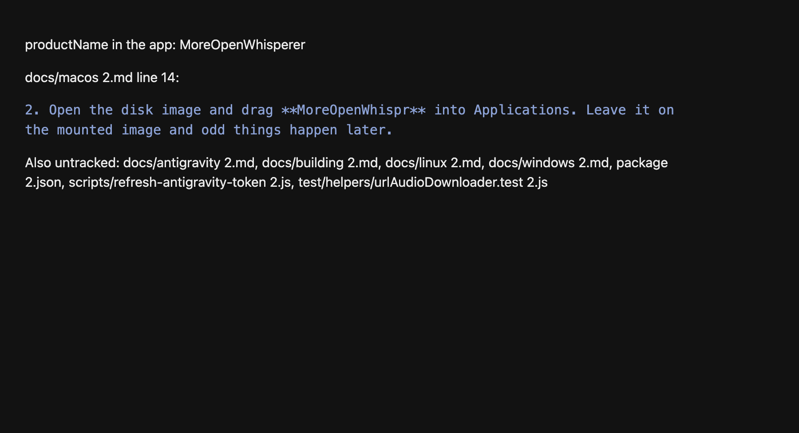
Importance: Low importance
The working tree has untracked copies with 2 before the extension. They still describe the shipping app as MoreOpenWhispr, including install paths such as MoreOpenWhispr.app. The app name in electron-builder.json and src/config/mowProfile.ts is MoreOpenWhisperer. The tracked docs under docs/ were updated. These copies were not.
They are not imported by the build. They show up if someone opens the extra file by mistake.
Files:
- `docs/antigravity 2.md`
- `docs/building 2.md`
- `docs/linux 2.md`
- `docs/macos 2.md`
- `docs/windows 2.md`
- `package 2.json`
- `scripts/refresh-antigravity-token 2.js`
- `test/helpers/urlAudioDownloader.test 2.js`
docs/macos 2.md says to drag MoreOpenWhispr into Applications and to delete /Applications/MoreOpenWhispr.app.